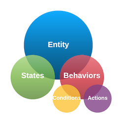

Ready?
Let your imagination wander ...
Let your imagination wander ...
World is an interactive web/browser based text adventure game platform. You can play, build, or modify Worlds of any size. You can combine Worlds together.
Players interact with World through simple imperative commands that start with a verb: take the golden sword, unlock the front door with the rusty key, go garden, etc.
To play a game, load a World file, a simple single JSON file that contains all the data that drives a game. You can load multiple World files and combine them!
Editor: the World is a simple one page javascript driven web application. It has both a Play View and an Editor View. In Editor View, you can easily modify or create new Entities or entire Worlds with simple logic statements and a lot of imagination!
At any time you can save the current World, which also saves the current state of the game.
World is ...
Simple: a single object model, a single js executable, a single json data file.
Flexible: fully configurable input and output text, can even be translated into other languages.
Extensible: Worlds can be built in modules and combined with each other. World data can be consumed by other applications via a simple JSON file format.
Powerful: create simple Worlds in minutes, complex Worlds in hours, and an epic Zork sized World in days.
Free and Open Source: for everyone who loves text adventure games, logic and problem solving, and telling stories.
Select from the Worlds on the home page. Play, download, use .wld files as a template to create your own World.
Use the World Editor to easily modify and create new Entities.
Let us know your progress and get in touch! Post your Worlds for others to experience! Send us your ideas or your best work!
Your entire World is modeled through a single object: an Entity. Everything in your World, a person, place, or thing, is simply an Entity.
Entities have Properties and Behaviors. They are in a certain State and have a set of Behaviors that respond to your commands and to other Entities.
Entities are connected to each other in Parent and Child relationships. Entities in your Space will react to your commands.
An Entity (which is any Person, Place, or Thing) has: Basic Information, States, and Behaviors. States describe what the the Entity is now. Behaviors are a series of Conditions and Actions (IF and THEN statements) that react to User Input and other Entities.

Entities are built and edited in the the Entity Editor. If you open a World in edit view, you can toggle between Edit View and Play View at any time.
Don't want to read any more documentation? Then just get started!
An Entity must have a Name. In most cases, an Entity has a Parent (it belongs to something, such as Object belongs to a Room, your possessions belong to you, etc.). An Entity must be assigned an inital State, 0 is the default. Count is optional, and has many uses, and defaults to 0. Finally, a set of set Properties can be set to change the Default Behavior of the Entity.
Name. Must be unique, short (1-2 words recommended, and at least 2 chars), and ideally, lowercase for consistency. Examples: silver sword, cluster of apples, wicker basket, house, rabid dog, etc. The Entity Name is how you will reference the entity from other entities.
Parent. Ultimately, every entity needs to belong somewhere (or to someone). Objects around you, including you as a player, are owned by a Room. A possession of yours is owned by you. As you move from Room to Room, you change your Parent to the new Room. A Room can be unassigned or point to world as its Parent. Things, Rooms, World, and me are all Entities. A parent relationship is not needed if the Entity is a Room or is not in play.
State. A State number is required. A State is used to describe the object as it is in the current moment. States are tracked as numbers starting at 0.
Count. Count is a number that can be used for multiple purposes: to track internal state, strength, achievement or merit, or the quantity of an Entity. Integers are recommended, but decimals supported. A Players Count are displayed in the default Player View as Points.
Properties. These are optional non-changing attributes that define the Default Behavior of the Entity:
container
size
notake
noput
strength
quantity
Include the container property on Objects that can hold other Entities (basket, box, barrel, phone booth, etc.) This allows put X into Y and take X from Y Default Actions. Otherwise you will get a you can't do that error.
Other Entities including 'me' and any Entity that can be your Parent (eg. a Room) are containers by default and don't need this specified.
To specify a limit on the number of objects that can be contained, follow container with a number: container5, container20, etc. Put the container property on the 'me' Entity to limit how much your character can carry.
By default, all Entities are size 1. However, to limit a container to fewer large objects, assign a size with a number to larger Entities: size2, size15, etc.
Sizes will be added up to not exceed the container limit. Example: if a basket Entity is assigned container10. It will fit 5 objects of default size1, 1 object of size4, but will no longer fit an additional Entity of size2.
Containers themselves must be given a fixed size. They will keep this size regardless if they are empty or full. A backpack Entity can be a container10,size5, meaning it can hold 10 size points but only weighs you by size5. This makes sense in that a container can help you carry more!
Some objects are not meant to be taken by default. This includes most Beings such as characters in your story, or massive objects such as telephone booth, metal vat, car, etc.
More unusual, but interesting, once you either have or take an object, this will not let you put it down by default. This Entity could be a guiding spirit, voice in your head, faithful dog, memory enhancement chip, etc.
strength only affects the description output. Use this property if you are using Points to track a Being's strength and you want the user to know how many strength points they have, typically used for battle situations. An entity's Points will be shown as: the {swamp monster} has a stregth of 8.
As with strength, quantity only affects the description output. Use this property if you are using Points to track the Quanity of an Entity. Use this for such things as matches, coins, poison darts, etc. You can even use decimals. You have a bag full of donuts. You have 5 of these. or You have Xuru currency. You have 7.25 of these.
The State Description describes the Entity to the Player. There is one description for every possible State. At a minimum, a State 0 Description is required. Use full sentences that end in a period. In Abridged mode, only the first sentence will be displayed.
For a Place, answer the question: Where are you?
You are under a ladder.., Around you is water..
For a Thing or Being, start with a noun phrase. Answer the question: Here is …
A large barrel full of apples. An old key. A frightening swamp monster.
The State of the Entity determines which State Description to show the Player. The State is what an Entity ‘is’ at any given time. A ‘glass ball’ may begin first in State 0: ‘A clear blue ball’, after certain actions, it turns into State 1: ‘A glowing sphere’, and finally, State 2: ‘A cracked glass ball’.
A Behavior consists of: Conditions and Actions.
Conditions are the ‘IF statement’ that check the User Input and (optionally) the Properties of other Entities. Actions are the ‘THEN statement’ that act on other Entities, changing their State, Parent, or Count.
First and foremost, Entities react to a user’s input. A condition first tries to match the users: verb, noun (eg. object), and optionally: preposition, and indirect object.
You can put in a ‘bag of words’ to match several possible inputs. The following would match climb tree, climb fort, go fort, go tree, climb tree fort, etc. but in all cases would require ‘rope’ as your indirect object, eg. climb tree using rope, climb fort with rope, etc.
You can even leave the verb and/or noun empty as a ‘wildcard’. But beware, this means this Condition is likely to fire more frequently or at every turn.
Now comes the fun part! After the user input is matched, further optional Conditions are checked. World Meta Commands are simple logic statements, much like a simple programming language, which check the State, Parent, and Count of other Entities.
Don’t be afraid, this is a very easy language to learn. Condition Statements are a series of ANDed logic statements in this form:
{Entity Name} : {S|P|C} {=|!|<|>} {some value} , ...
S = State. P = Parent. C = Count.
pirate:S=1
Is the Pirate in State 1?
evil wizard:P=tower
Is the evil wizard in the tower, eg. is the Parent of the evil wizard the tower?
sea monster:C<10,sea monster:P=pond
Does the sea monster have less than 10 points AND is it in the pond?)
gold cup:S!2,sword:P=me,me:C>20
Is the gold cup not in State 2 AND do I have the sword AND do I have more than 20 Points?
key:O!me,vulture:S>2,vulture:P=bedroom
Do I not have the key AND the vulture is in some State above 2 AND the vulture is in the bedroom?
The player is always referred to as ‘me’ in Condition and Action statements. Eg:
me:P=room5,me:C+7,sword:P=me, ..
For advanced players: World actually allows the Player to play as any Entity. By default, the Player plays as the ‘me’ Entity. Regardless of which Entity you are playing, Conditions and Actions will always recognize ‘me’ as the current Player. Always use ‘me’ in your Conditions and Actions when referring to ‘the Player’.
You can make a Condition random by adding R={% probability, 0-99} anywhere on the Condition statement.
me:P=haunted house,R=40
If you are in the haunted house, execute this action 40% of the time ...
Once both the User Input Condition and Condition Statements are matched, it’s time for something to happen. Everything that ‘happens’ in the World is through one or more Entities changing: State, Parent, or Count. Each Action is followed by an optional message. Simple!
And even more good news: Actions use almost the exact same syntax as Conditions!
{Entity Name} : {S|P|C} {=|+|-} {some value} , ...
S = State. P = Parent. C = Count.
me:P=house
Changes my Parent, eg. my location, to House. You create this type of action for every ‘go’ command.
gold nugget:P=thief,me:C-8,cave:S=3
Moves the gold nugget to the thief, deducts 8 points from me, sets the cave to State 3.
jewel:P=me,me:C+25,me:P=magic carpet
Moves the jewel to me, awards me 25 points, moves me to the magic carpet.
Once an action executes (the User Input Conditions and Condition statements are met), the World will move on to the next Entity and check its actions, it will not continue to process conditions/actions on the same Entity. This avoids many unexpected recursive and annoying behavior (trust us on this one!)
Also important: once an Action fires, the World will no longer process actions from your Room or Default Actions. This is so that Conditions from Entities in your World can override standard behavior. This way, you can prevent a Player from ‘going’, ‘taking’, ‘putting’, etc. in the default way.
continue. Use continue to execute Room Actions and Default Actions in addition to this Action. Use ‘continue’ if you want to give the user a message (something humorous, perhaps) and still want all further Behaviors triggered as well.
Example: everytime you ‘go’ somewhere, you want to print a message ‘your feet ache’. Normally, further ‘go’ Conditions will be ignored, but with ‘continue’, you ensure that Room and Default Conditions are executed.
me:C-5,continue
Takes away 5 points from me, (gives the user a message), AND process defaults
autorun. If Conditions are met, an autorun Action will force a next move in 5 seconds. Exactly the same as if you hit ‘enter’. Use with a wildcard event (eg. no verb or noun) that will execute no matter what (eg. a monster making an attack, a continual change in the Room, etc.)
me:P=vampire room,autorun
As long as you are in the vampire room, the game will force a move each 5 seconds.
PARENT! and CHILD! are some of the most advanced and powerful concepts in World. You will want to first get experience in the basics first. However, when ready, these functions will take your World to a new dimension.
PARENT!. In certain advanced scenarios, you will want to set the Parent of an Entity to the Parent of another Entity. For example, if the Player is being transported in a container (eg. a magic carpet, a car, a phone booth ..) and wants to 'get out' of the container at anytime, the Player needs to parent to the same Parent as their container. Here you should use the special command me:P=PARENT!{my container}. In other words: move an Entity (usually 'me') to the same Room as my Container. If I am in car (me:P=car), and my car happens to be in garage (car:P=garage), by getting out of the car, I want to be moved to the Room of my car (me:P=Parent!car) which moves 'me' to garage. You can also use PARENT! to make any other Entity magically appear in the same room as you, regardless of where you are: genie:P=PARENT!me.
CHILD!. You can also assign an Entity to the child of a parent Entity. Since an Entity can have many children, this assignment is random. For example, you can have a troll randomly appear in one of many rooms in a cave. You must first create a special parent Entity, in this case, for all the rooms in the cave (eg. cave rooms). Then, through an action you assign the troll randomly to one of the Rooms: troll:P=CHILD!cave rooms. One of the Rooms that look up to cave rooms will be choosen at random, creating a sense of agency and motion. By repeatidly calling this same action, the troll will move around the cave rooms at random. You can also move your character at random as if through a portal. Assign certain 'portal' locations to a common Parent portal rooms and then, move your character at random to one of these locations: me:P=CHILD!portal rooms.
IF the Player enters open door with|using key AND house is still in State 0 AND I have the key THEN change the house Entity to State 1 and show a message.
Battle behavior. IF the Player enters hit|kill|strike the rock monster AND the monster is either State 0 or 1 THEN advance the monster up 1 State and take away 3 Points from me and show a message.
World will interpret the following commands automatically if no other Entity in your Space gets to it first
Take
Put
Look
Inventory
Brief
Verbose
This is not a long list, leaving most of the game to be highly customizable; these commands would certainly be a pain to code, so they are handled automatically.
However, if you don’t want the user to use these commands, simply put a Behavior in the Room or Object in the Player’s Space that reacts to ‘put’ or ‘get’ and the default behavior will not trigger. Important Note: Entities in your Space override default Behavior
World accepts simple imperative phrases starting with a verb. To minimize unexpected behavior, World does not process compound sentences and will simply stop at the first and. Accepted phrase types include:
{verb} {noun} {prep} {obj}
kill the green dragon with the golden sword
{verb} {prep} {prep} {noun}
go down through the tunnel, go up into the escape hatch, go down around bend
{verb} {prep} {noun}
throw around the ball, go through the waterfall, lean against the wall
{verb} {noun}
get the golden goose
{verb} {prep}
get out, go down, crawl through
{verb} {noun} {prep}
place bar sideways, follow the staircase up, lay carpet down, throw the rope across
{verb} {obj} {noun}
give the wizard the pearl, feed the pig an oat, show the man a book
{verb}
inventory, look, run, yell
World will process entered words at least 2 characters in length, it will not match single letters as words (these are too ambiguous).
World will map a variety of common verbs to ‘high frequency’ verbs for you automatically. If a user enters ‘get’ World will also understand this as ‘take’. Use these Verbs in your Condition Statements.
In your Conditions, you can add multiple word combinations (eg. bag of words) but you don’t need to put ‘get’, ‘gather’, etc. each time, just use ‘take’. Here are the preprogrammed high frequency verb mappings:
take <- get, grab, gather, collect
put <- drop, lower
look <- see, examine, inspect
brief <- abridge, abridged, short
verbose <- long, wordy
go <- walk, run, head
jump <- leap
push <- press, shove
close <- shut
open <- lift, raise
hit <- punch, strike, slam, kick, stab, kill
break <- smash, shatter, destroy
say <- talk, speak, chat
ask <- question, inquire
yell <- scream, shout
Note: World will not map Nouns or Objects to other words, it will simply do a 2 character (or more) match against your word list.
If you specify a preposition and/or indirect object in the Behavior User Input fields, then the preposition and indirect object will be required by the player. The following Condition:
will not pass if the user types:
open mailbox
The Condition will pass if the user types in all four words, such as any of the following:
open mailbox with can
open mailbox with opener
open mailbox using can opener
open mailbox with ca
open mailbox using op
...
On any given turn, the Entities that matter are those in your Space.
The red Entities make up your Space. These are the Entities that are in a Parent/Child relationship with you. These Entities listen to and respond to your Actions. There may be hundreds of other rooms and objects in the World, however, only the Entities in your Space react to you in a given turn.
Entities respond to User Commands in the following order:
1. Me
2. Entities in your Room (Things in Room)
3. Entities in your possession (My Things)
4. Your Room
5. The World (above your Room)
6. and finally, Default Actions
World performs default actions for the following commands: take, put, look, inventory, brief, verbose.
Even though you might only get the golden cup after many puzzles, put the ‘winning’ Behavior first, since it is the most specific (give cup ownership to me, IF cup State = 5 AND Room State = 3 AND My Points > 30).
Put more general Behavior (eg. ‘Try again’, ‘You swing and miss!’) toward the end of your logic.
Beings are the most complex Entities. They are living (?) things that can move, react, talk, attack based on your actions. In fact, any Entity can do these things, for a very creative effect!
You should add the notake property to most Beings (unless it is a butterfly or hamster that you can take). To prevent any further actions taken on a Being, simply put in a wildcard Behavior as your last Behavior.
Often we think of our story in linear form, for example, ‘you are in the attic, you are tired from walking all those stairs up!’. However, what if you can also enter the attic from a hole in the roof? Make sure your descriptions work from all points of view and points of entry.
Useful debugging information is generated during Play Mode, including parsed input, Entities processed, Actions triggered. To enable: Safari: Develop > Show JavaScript Console
Additional game configuration can be done in the AdventureConfig.js file. Here you can change:
High Use Verbs and mappings
Prepositions
Default behavior text (“You don’t seem to have this here”, ..)
Help text
Dirk Koechner is an avid 'single page apps written by one person without a framework' advocate and enthusiast. He was enamored with text adventure games, such as Zork, since youth and has always wanted to write a clear powerful tool to create text based interactive games. Other projects include writing a music composition software. He lives with his family near Munich, Germany.